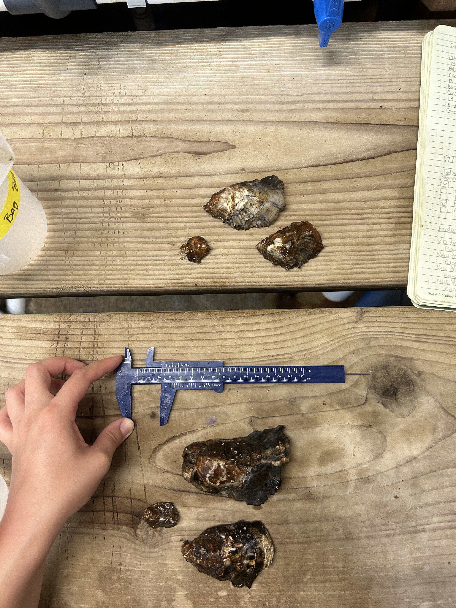
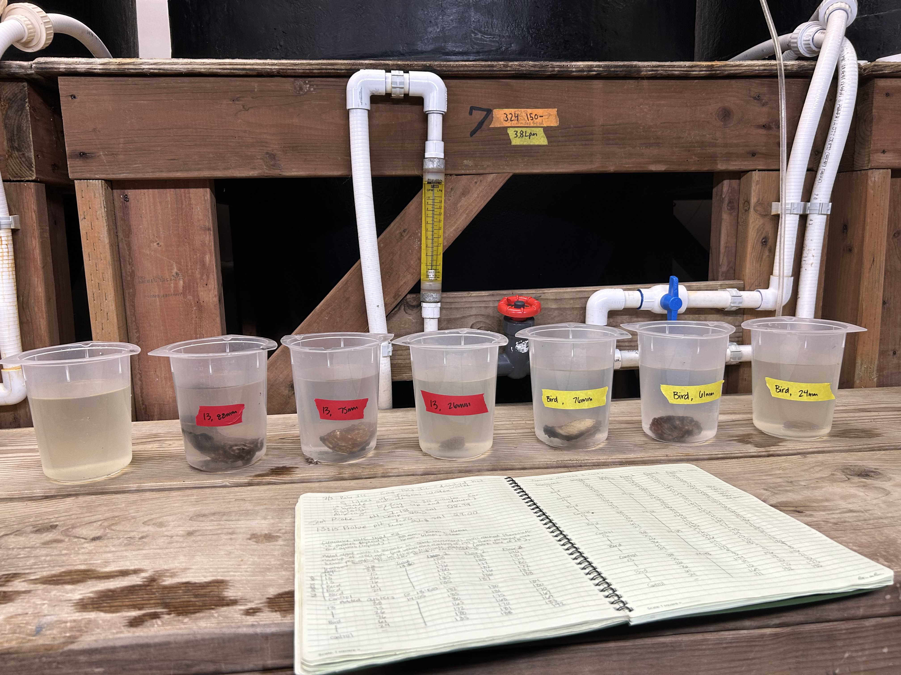
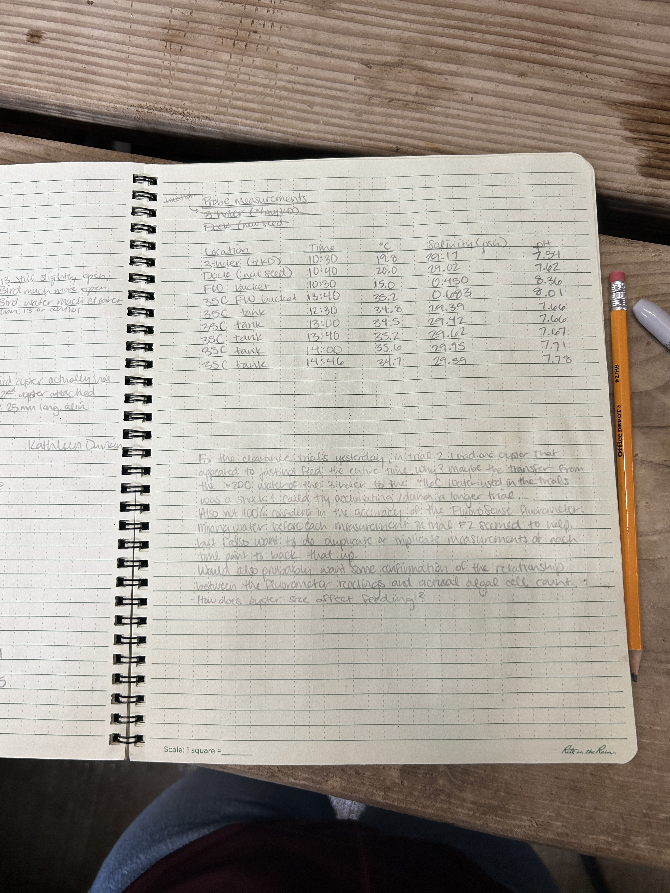
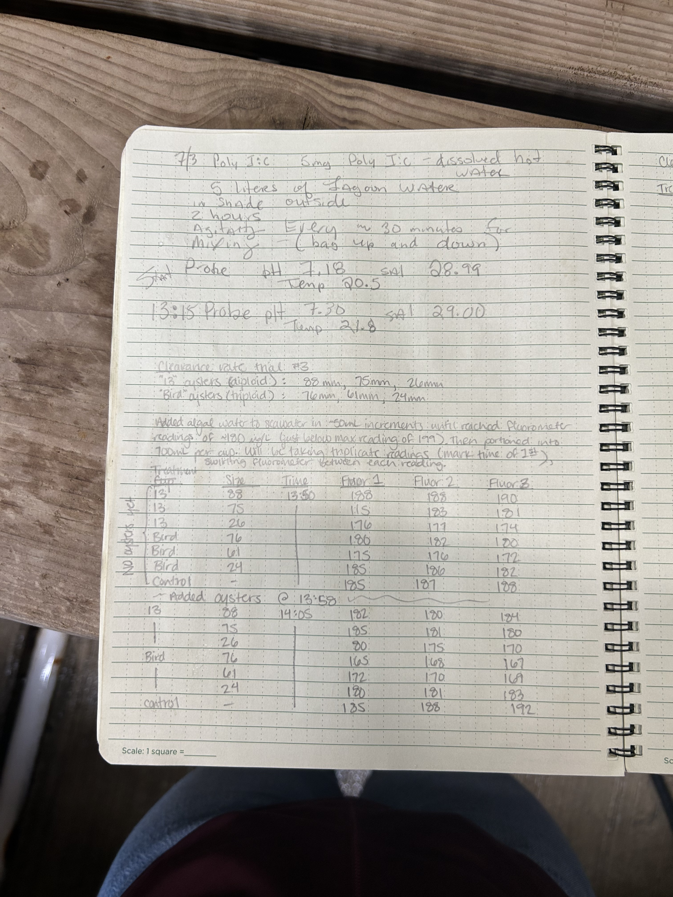
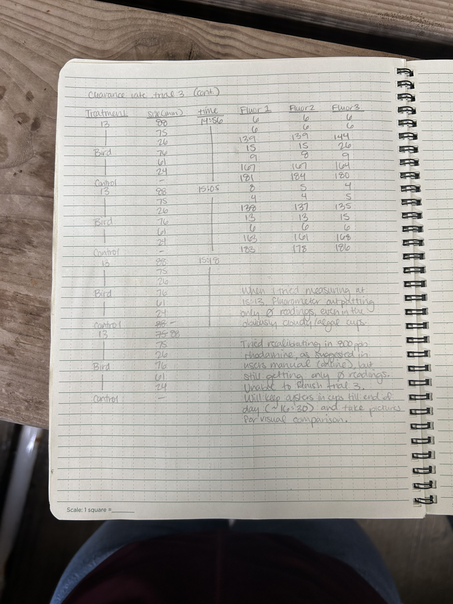

Another day at Point Whitney doing stress hardening and clearance rate trials
KD dioploid/triploid stress hardening
New seed hardening (35C, FW, and 35C FW)
Clearance rate trials
We also took two bags of oysters (the “13” diploid untreated, and the “Bird - Extra” triploid untreated) back to the FTR lab to use in some Resazurin trials. Transported in plastic cooler with ice packs, placed in the seawater tank in FTR. Out of water for ~5hrs.
Stress hardening
Treatments I did today:
| Experiment | Bags (cattle tag #s) | Treatment | Start time | End time | Duration |
|---|---|---|---|---|---|
| KD diploid/triploid | 60, 65 | 35C seawater | 12:27 | 16:27 | 4 hr |
| New seed | 56, 66 | freshwater | 10:12 | 11:12 | 1 hr |
| New seed | 30, 47 | 35C seawater | 12:31 | 13:31 | 1 hr |
| New seed | 75, 76 | 35C freshwater | 13:35 | 14:35 | 1 hr |
I took probe measurements from the three holer (the one holding the KD oysters) and dock, and from each of the stress treatment containers. See raw data in the “Notebook photos” section, and digitally entered data here.
Clearance rate trials
Trial 3
Another round of clearance rate trials. This time I wanted to try oysters at a range of sizes. Selected 3 oysters of a range of sizes from both the “13” diploid cohort and the “Bird” triploid cohort (untreated). Placed each oyster in 700mL of algae-rich seawater (sourced from black tub and diluted until algae content was just below the quantifiable level of 199 ug/L using the FluoroSense fluorometer). Monitored for ~1hr at roughly 10min intervals. Took triplicate fluorometer readings each time.
See data entered here, or original data in the below notebook photos.

As expected, the small oysters (13 26mm and Bird 24mm) have a much lower clearance rate. Interestingly though, all of the larger oysters (13 75mm, 13 88mm, Bird 61mm, and Bird 76mm) see to have pretty similar clearance rates, with the Bird 61mm oyster actually beating the others at most time points!


Overall, since the fluorometer is non-invasive and very easy to use, it seems like the best option may just be to measure clearance rate of the full cohorts (i.e. place the full treatment bags in algae-rich water and monitor feeding). The oysters don’t always open to feed and the fluorometer doesn’t seem sensitive/consistent enough to use with smaller sample sizes.
Unfortunately the FluoroSense fluorometer stopped working at roughly 15:15. It’s only displaying 0 readings, even for my control solution which was consistently reading at ~180 and was visibly clouded with algae. Matt and I tried recalibrating the fluorometer using the 800ppb Rhodamine calibration solution, but saw no change. There’s no visible damage, the display is functioning normally, and the blue fluorescence light is still working as usual, so I’m really not sure what the issue is :(
Notebook photos





Ucar/ferry reciepts